R cuenta con un sistema de generación de gráficas poderosas y flexibles; sin embargo, su uso requiere de mucha práctica y paciencia.
Para los ejemplos emplearemos la base de datos disponible en UCI Machine Learning Repository. Emplearemos el conjunto de datos denominado “Bank Marketing Data Set” que contiene información de personas contactadas en una campaña de marketing directo puesta en marcha por un banco de Portugal.
#Importamos lo datos
# download.file(
# url = "https://raw.githubusercontent.com/jboscomendoza/r-principiantes-bookdown/master/datos/bank.csv",
# destfile = "bank.csv"
# )readLines("datos/bank.csv", n = 4)
banco <- read.csv("datos/bank.csv", sep = ";")head(banco)## age job marital education
## 1 30 unemployed married primary
## 2 33 services married secondary
## 3 35 management single tertiary
## 4 30 management married tertiary
## 5 59 blue-collar married secondary
## 6 35 management single tertiary
## default balance housing loan
## 1 no 1787 no no
## 2 no 4789 yes yes
## 3 no 1350 yes no
## 4 no 1476 yes yes
## 5 no 0 yes no
## 6 no 747 no no
## contact day month duration
## 1 cellular 19 oct 79
## 2 cellular 11 may 220
## 3 cellular 16 apr 185
## 4 unknown 3 jun 199
## 5 unknown 5 may 226
## 6 cellular 23 feb 141
## campaign pdays previous poutcome
## 1 1 -1 0 unknown
## 2 1 339 4 failure
## 3 1 330 1 failure
## 4 4 -1 0 unknown
## 5 1 -1 0 unknown
## 6 2 176 3 failure
## y
## 1 no
## 2 no
## 3 no
## 4 no
## 5 no
## 6 no# #Cómo conocemos las dimensiones del dataframe?
# dim(banco)
#
# #Determinamos la clase de cada variable
# lapply(banco, class)
#
# #Resumen de nuestra base de datos
# summary(banco)La función plot() es usada de manera general para crear
gráficos en R. Así mismo, podemos ajustar diferentes parámetros para
controlar el aspecto y dimensión de los gráficos.
plot() siempre pide un argumento x, que
corresponde al eje X de una gráfica. x
requiere un vector y si no especificamos este argumento, obtendremos un
error y no se creará la gráfica. El resto de los argumentos de
plot() son opcionales, pero el más importante es
y. Este argumento también requiere un vector y corresponde
al eje Y de la gráfica.
Dependiendo del tipo de dato que sea x o y
tendremos un gráfico específico de acuerdo a las siguientes reglas:
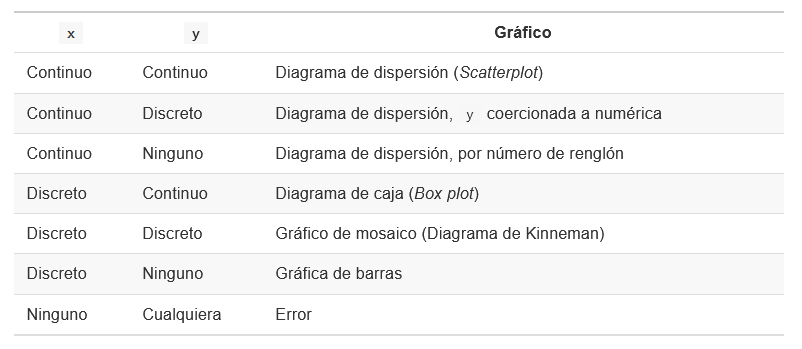
En donde los tipos de dato son:
Continuo: Un vector numérico, entero, lógico o complejo.
Discreto: Un vector de factores o cadenas de texto.
Hay funciones que generan tipos específicos de gráficos como por
ejemplo la función barplot() o hist().
Además, es importante tener en cuenta que existen funciones de ALTO NIVEL y funciones de BAJO NIVEL. Las primeras permiten crear un nuevo gráfico, las segundas, agregar elementos a uno preexistente.
Permite observar la distribución de los datos numéricos usando
barras. Un histograma se crea con la función hist(), donde
el primer argumento debe ser un vector numérico.
Un ejemplo con la base de datos anteriormente usada:
# histograma
hist((x = banco$age))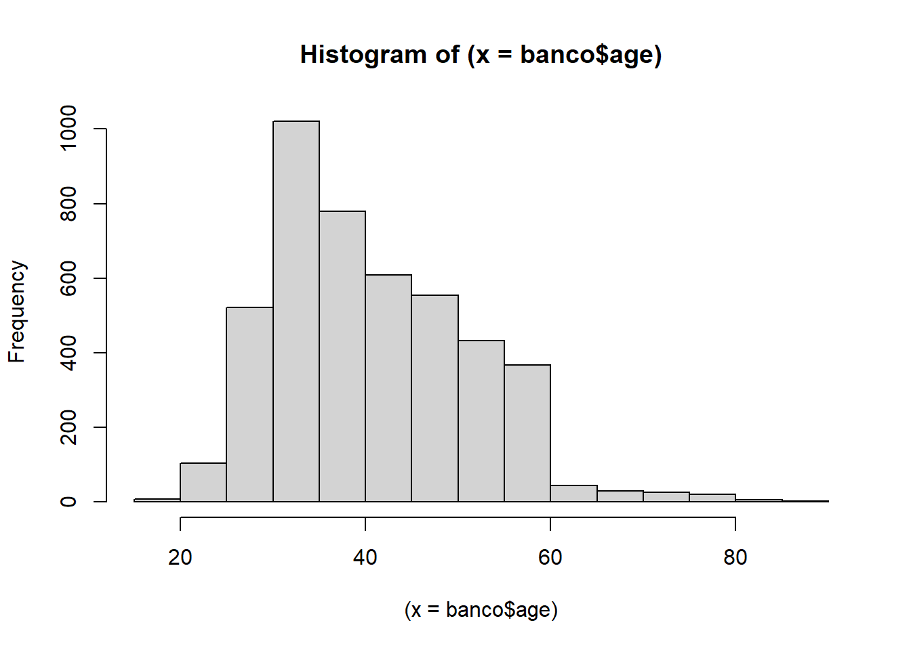
# modificar algunos parámetros
hist(x = banco$age,
# titulo
main = "Histograma de edad",
# ejes
xlab = "Edad",
ylab = "Frecuencia",
# color
col = "purple")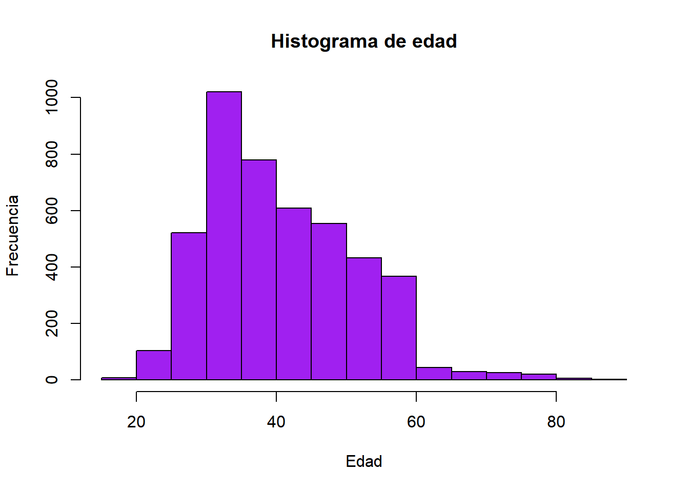 Se pude obtener una gran variedad de colores en R, pueden ver una lista de los colores disponibles en R en el siguiente enlace: http://www.stat.columbia.edu/~tzheng/files/Rcolor.pdf
Usado para mostrar la relación entre dos variables numéricas
continuas usando puntos. En R para generar un diagrama de dispersión se
usa la función plot() con sus respectivos argumentos
x e y.
plot(x = banco$age, y = banco$balance, type = "p")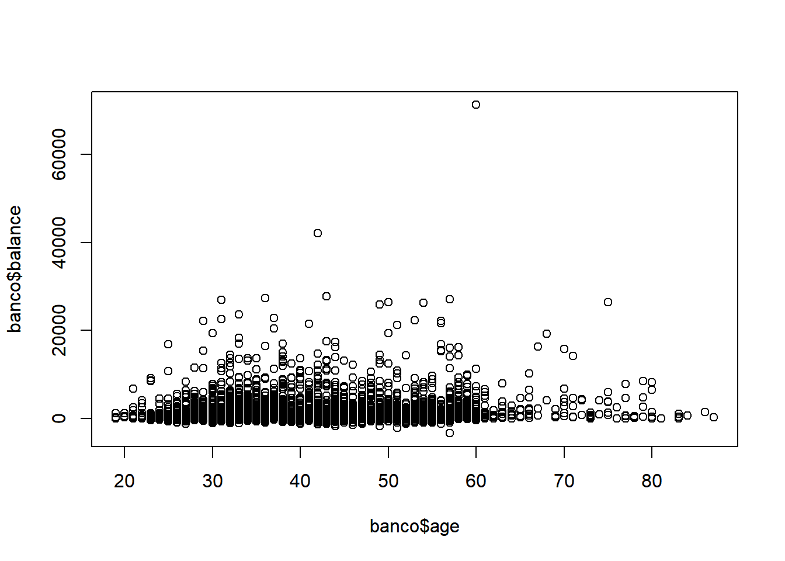
Tenemos valores extremos que no permiten visualizar correctamente la mayor cantidad de nuestros datos. Entonces, para fines de tener una gráfica más informativa, vamos a cambiar todos los valores mayores a 15000.
estos valores para tener una mejor visualización.
banco$balance <- ifelse(banco$balance > 15000, 15000, banco$balance)
plot(x = banco$age,
y = banco$balance,
type = "p",
pch = "+")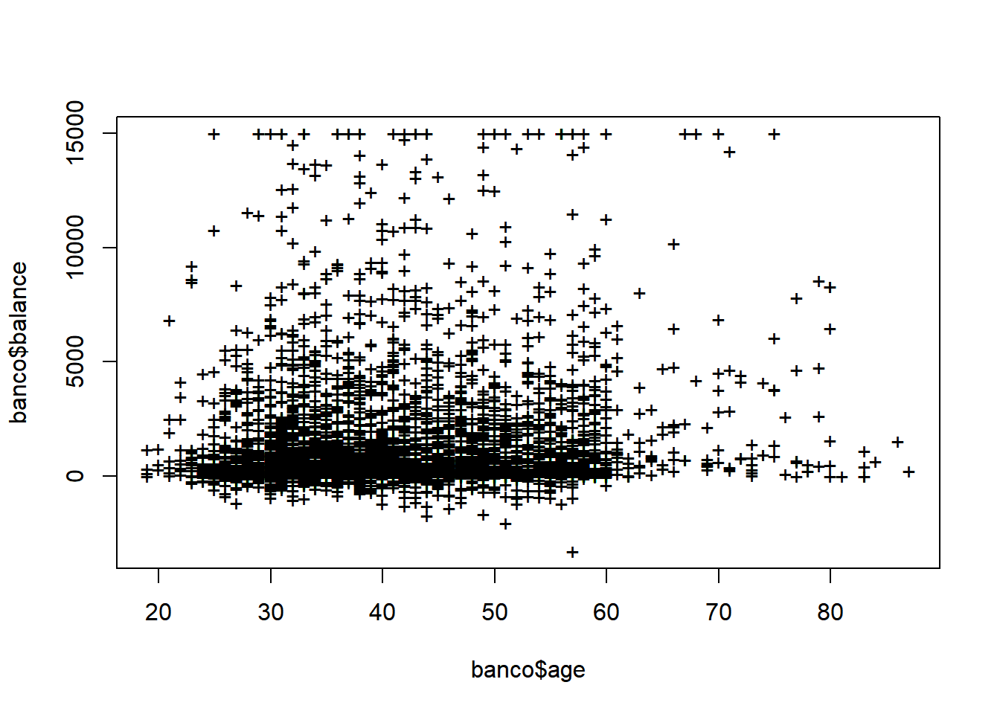
plot(x = banco$age, y = banco$balance, col = as.factor(banco$loan))Sabemos que los niveles de loan son “no” y “yes”, además que los colores han sido rojo y negro pero sería de utilidad para el lector agregar una leyenda que explique explícitamente los colores.
plot(x = banco$age,
y = banco$balance,
col = as.factor(banco$loan))
legend(
# Posición leyenda
x = "topleft",
# Categoría de la variable
legend = c("No", "Yes"),
# Relleno de cada variable categórica
fill = c("Black", "Red"),
# titulo
title = "Loan")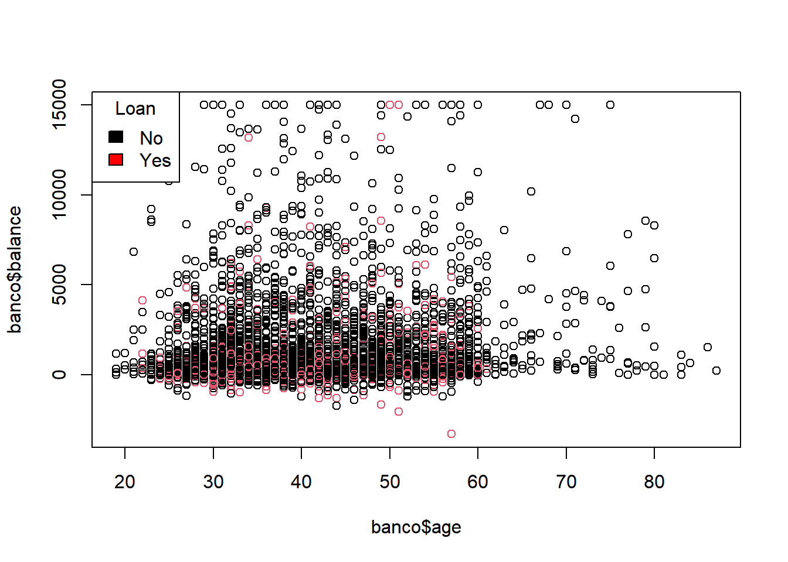
Usando la base de datos Iris
plot(x = iris$Petal.Length,
y = iris$Petal.Width,
col = as.factor(iris$Species),
main = "Iris - Pétalo",
xlab = "Largo",
ylab = "Ancho")
legend(x = "topleft",
legend = c("Setosa",
"Versicolor",
"Virginica"),
fill = c("black",
"red",
"green"),
title = "Especie")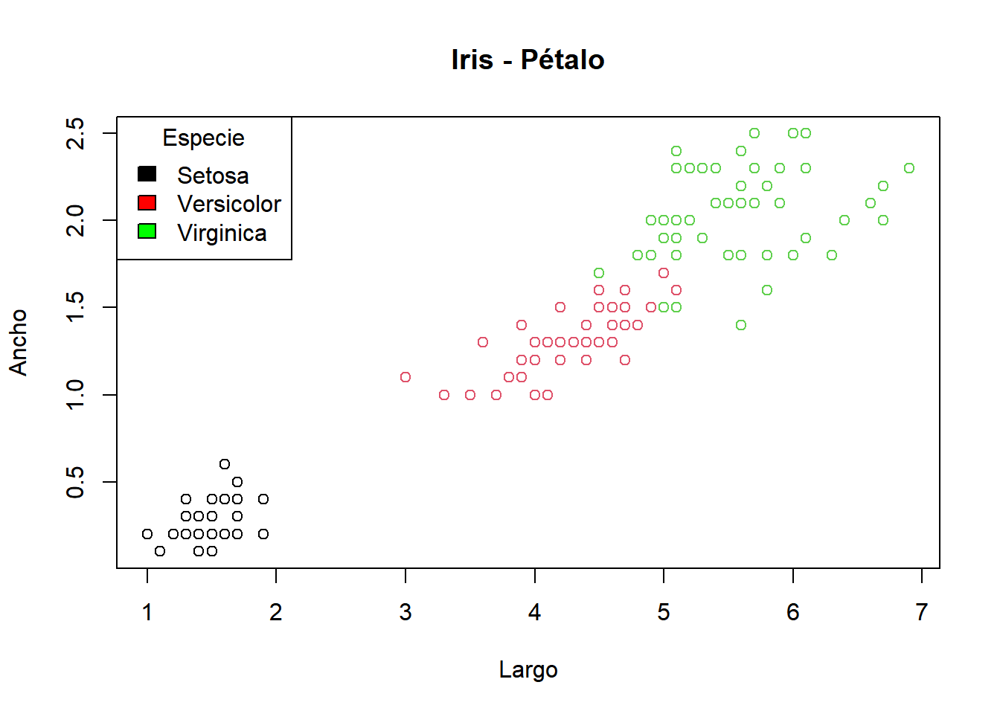
Son gráficos que muestran la distribución de una variable usando cuartiles, de modo que de forma visual podemos inferir algunas cosas sobre su dispersión, ubicación y simetría.
Para crear un boxplot usamos la función plot() teniendo
en cuenta que el argumento x debe ser un factor, y como
argumento y, un vector numérico.
plot(x = as.factor(banco$education),
y = banco$age)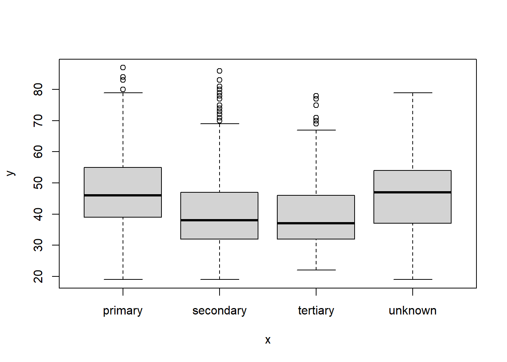
plot(x = as.factor(banco$education),
y = banco$age,
main = "Edad por nivel educativo",
xlab = "Nivel educativo",
ylab = "Edad",
col = c("orange3",
"yellow3",
"green3",
"grey"))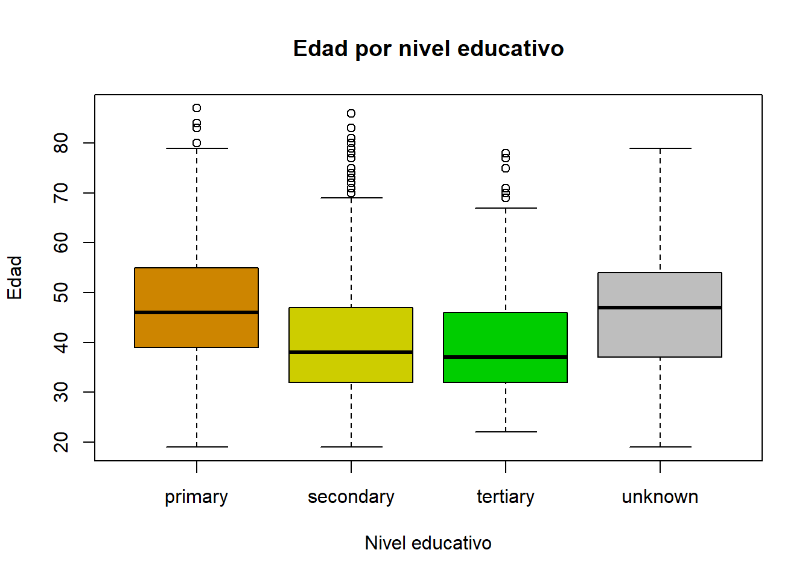
También se puede generar el mismo gráfico con una función específica
de R denominada boxplot()
boxplot(formula = age ~ education, data = banco)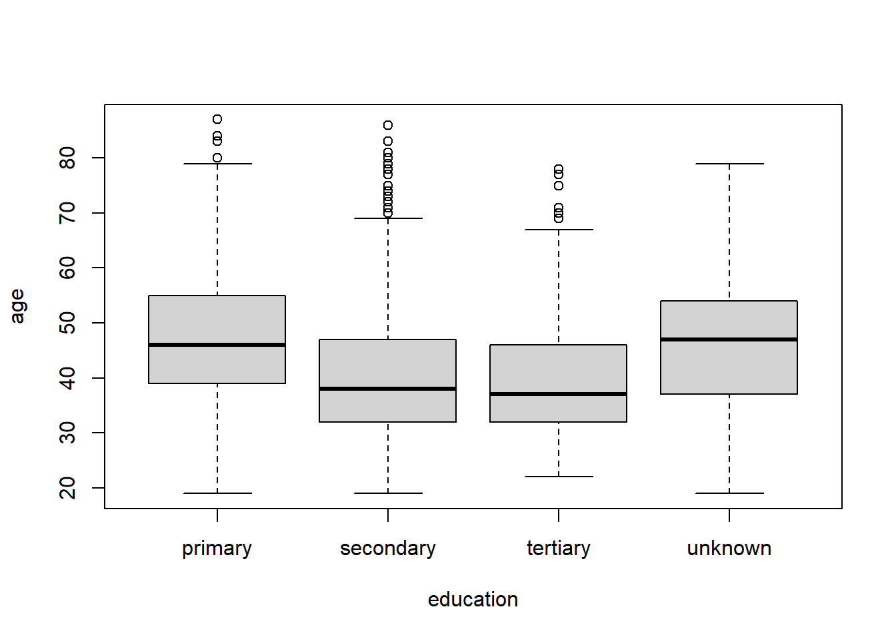
x <- c( 1:50 )
y0 <- rnorm( 50, mean = 5)
y1 <- rnorm( 50, mean = 0 )
y2 <- rnorm( 50, mean = -5 )
head(data.frame(x,y0,y1,y2))## x y0 y1 y2
## 1 1 7.283303 -0.5344946 -5.217384
## 2 2 6.558602 0.3206522 -5.562216
## 3 3 5.996005 -2.7004890 -6.471452
## 4 4 4.963346 0.4474810 -5.984750
## 5 5 6.947467 1.2750412 -2.991340
## 6 6 5.513328 -0.5509632 -6.132959plot(c(-1,50),
c(-8,9),
type = "n",
xlab = "Tiempos",
ylab = "Efectos",
main = "Líneas Temporales")
lines(x,
y0,
# grosor de línea
lwd = 0.7,
# tipo de linea
lty = 1,
# color
col = "blue")
lines(x, y1, lwd = 1.5, lty = 2, col = "darkorange1")
lines(x, y2, type = "b", lwd = 1.3, lty = 3, col = "green4")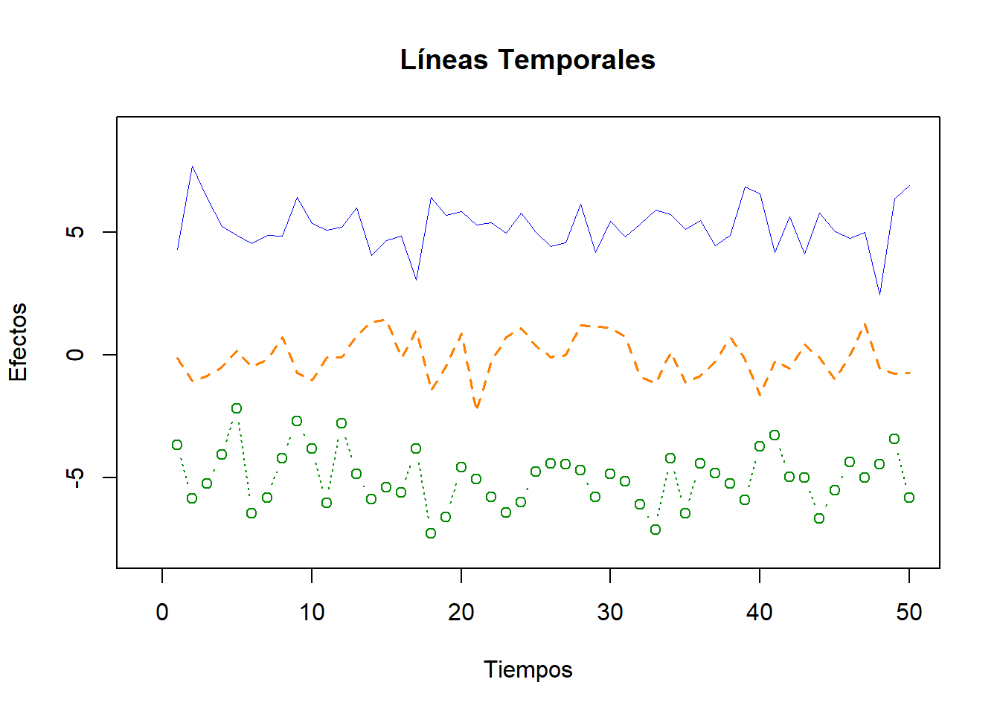
# help(points)par(mfrow = c(2,3))
# 1er grafico: Histograma
hist(x = banco$age,
# titulo
main = "Histograma de edad",
# ejes
xlab = "Edad",
ylab = "Frecuencia",
# color
col = "purple")
# 2do grafico: Dispersión
plot(x = banco$age,
y = banco$balance,
col = as.factor(banco$loan))
legend(
# Posición leyenda
x = "topleft",
# Categoría de la variable
legend = c("No", "Yes"),
# Relleno de cada variable categórica
fill = c("Black", "Red"),
# titulo
title = "Loan")
# 3er gráfico: Data Iris
plot(x = iris$Petal.Length,
y = iris$Petal.Width,
col = as.factor(iris$Species),
main = "Iris - Pétalo",
xlab = "Largo",
ylab = "Ancho")
legend(x = "topleft",
legend = c("Setosa",
"Versicolor",
"Virginica"),
fill = c("black",
"red",
"green"),
title = "Especie")
# 4to gráfico: Diagrama de caja usando la función plot()
plot(x = as.factor(banco$education),
y = banco$age,
main = "Edad por nivel educativo",
xlab = "Nivel educativo",
ylab = "Edad",
col = c("orange3",
"yellow3",
"green3",
"grey"))
# 5to gráfico: Diagrama de caja usando la fucnión boxplot()
boxplot(formula = age ~ education, data = banco)
# 6to gráfico: Serie de datos
plot(c(-1,50),
c(-8,9),
type = "n",
xlab = "Tiempos",
ylab = "Efectos",
main = "Líneas Temporales")
lines(x,
y0,
# grosor de línea
lwd = 0.7,
# tipo de linea
lty = 1,
# color
col = "blue")
lines(x, y1, lwd = 1.5, lty = 2, col = "darkorange1")
lines(x, y2, type = "b", lwd = 1.3, lty = 3, col = "green4")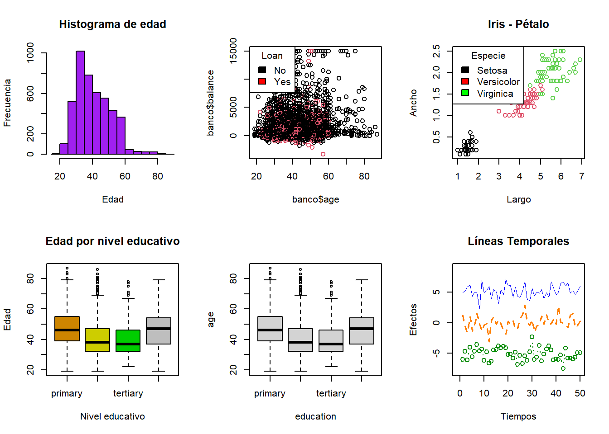
Para exportar un gráfico se puede usar algunas de las siguientes funciones:
bpm()
jpeg()
pdf()
png()
tiff()
Cada una de estas funciones tiene los siguientes argumentos:
filename: Nombre y ruta del plot.
width: El ancho de la imagen.
height: El alto de la imagen.
Estas funciones se llaman antes de crear el gráfico. Veamos un ejemplo:
# png(filename = "graphics_files/loan_age")
plot(x = banco$age,
y = banco$duration,
col = as.factor(banco$loan),
main = "Edad y Duración",
xlab = "Edad",
ylab = "Duración")
legend(x = "topleft",
legend = c("No", "Yes"),
fill = c("Black", "Red"),
title = "Loan")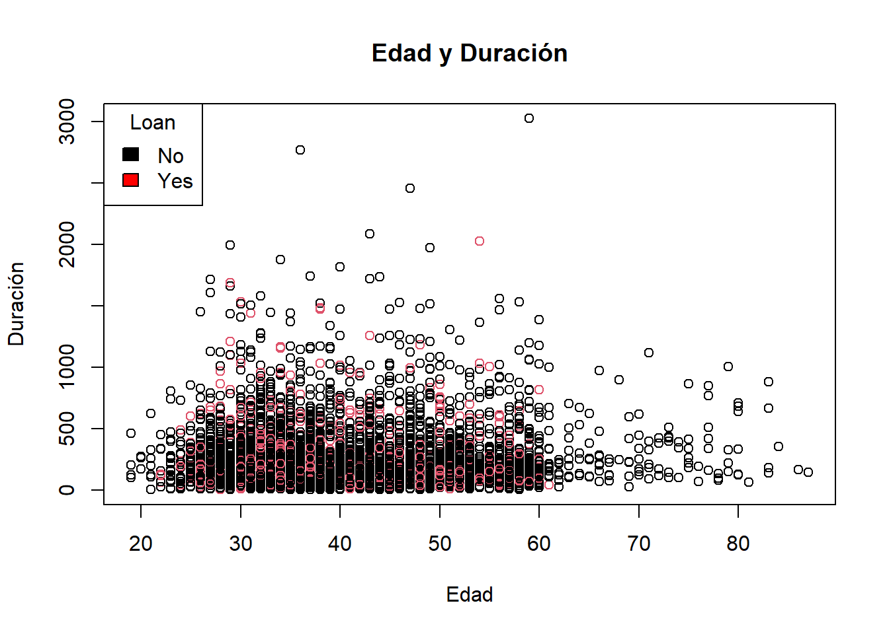
dev.off()## null device
## 1# file.show("graphics_files/loan_age")# png(filename = "graphics_files/graficosTodos")
par(mfrow = c(2,3))
# 1er grafico: Histograma
hist(x = banco$age,
# titulo
main = "Histograma de edad",
# ejes
xlab = "Edad",
ylab = "Frecuencia",
# color
col = "purple")
# 2do grafico: Dispersión
# plot(x = banco$age,
# y = banco$balance,
# col = as.factor(banco$loan))
legend(
# Posición leyenda
x = "topleft",
# Categoría de la variable
legend = c("No", "Yes"),
# Relleno de cada variable categórica
fill = c("Black", "Red"),
# titulo
title = "Loan")
# 3er gráfico: Data Iris
plot(x = iris$Petal.Length,
y = iris$Petal.Width,
col = as.factor(iris$Species),
main = "Iris - Pétalo",
xlab = "Largo",
ylab = "Ancho")
legend(x = "topleft",
legend = c("Setosa",
"Versicolor",
"Virginica"),
fill = c("black",
"red",
"green"),
title = "Especie")
# 4to gráfico: Diagrama de caja usando la función plot()
plot(x = as.factor(banco$education),
y = banco$age,
main = "Edad por nivel educativo",
xlab = "Nivel educativo",
ylab = "Edad",
col = c("orange3",
"yellow3",
"green3",
"grey"))
# 5to gráfico: Diagrama de caja usando la fucnión boxplot()
boxplot(formula = age ~ education, data = banco)
# 6to gráfico: Serie de datos
plot(c(-1,50),
c(-8,9),
type = "n",
xlab = "Tiempos",
ylab = "Efectos",
main = "Líneas Temporales")
lines(x,
y0,
# grosor de línea
lwd = 0.7,
# tipo de linea
lty = 1,
# color
col = "blue")
lines(x, y1, lwd = 1.5, lty = 2, col = "darkorange1")
lines(x, y2, type = "b", lwd = 1.3, lty = 3, col = "green4")
dev.off()## null device
## 1# file.show("graphics_files/graficosTodos")knitr::knit_exit()